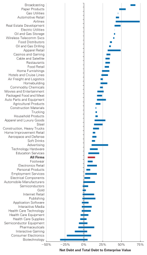
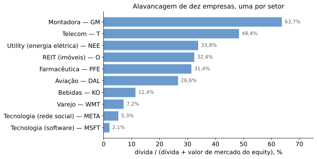
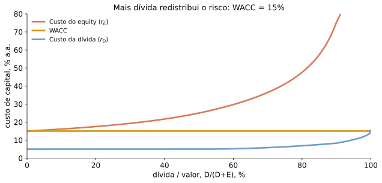
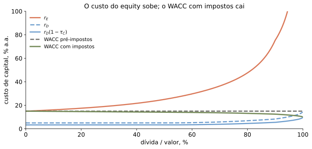
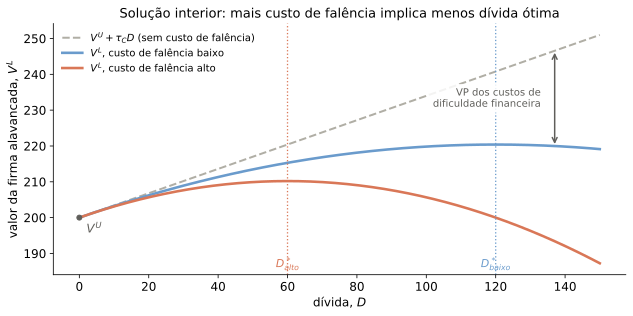

| Firma | Equity | Dívida |
|---|---|---|
| Apple | 98,3% | 1,7% |
| Meta | 95,6% | 4,4% |
| Delta | 80,9% | 19,1% |
A forma de financiar a firma — mais dívida, mais ações — muda o valor da firma?

Mesma pergunta: por que as escolhas de financiamento diferem tanto?
Berk e DeMarzo (2024), Figura 15.7; Capital IQ (2022). \(EV=E+D-\text{Caixa}\); a base difere de \(D+E\).
Fotografia de 2026: participações \(E/(D+E)\) e \(D/(D+E)\).
| Firma | Equity | Dívida |
|---|---|---|
| Apple | 98,3% | 1,7% |
| Meta | 95,6% | 4,4% |
| Delta | 80,9% | 19,1% |
| Firma | Equity | Dívida |
|---|---|---|
| Ambev | 98,8% | 1,2% |
| WEG | 97,7% | 2,3% |
| Telefônica | 95,4% | 4,6% |
| Sabesp | 68,6% | 31,4% |
| Rede D’Or | 66,3% | 33,7% |
| Equatorial | 48,9% | 51,1% |
As três menos e as três mais alavancadas entre as 11 não financeiras do top 20 da B3.
\(D\): dívida bruta contábil, sem arrendamentos e sem abater caixa; \(E\): capitalização em 07/10/2026. Balanços de jun/2026. Brasil: excluídas financeiras; Rede D’Or consolida SulAmérica. Fontes: B3, CVM, relatórios trimestrais dos EUA e Yahoo Finance.

Painel ilustrativo, não médias setoriais: um ticker por setor. Dívida vem do último balanço disponível (2025-06 a 2026-01) e market cap é corrente, portanto as datas não coincidem. Bancos/seguradoras excluídos; GM inclui dívida da GM Financial. Fonte: yfinance.
Economia incerta, duas datas \(t=0,1\), três estados \(s\in\{1,2,3\}\); \(CF_0=0\).
Fluxo dos ativos (não depende do financiamento), e preços de estado:
| Estado \(s\) | 1 | 2 | 3 |
|---|---|---|---|
| \(CF_1(s)\) | 6 | 5 | 3 |
| \(q(s)\) | \(2/4\) | \(1/4\) | \(1/4\) |
\[V^F=\frac{1}{4}\left(2\cdot 6+1\cdot 5+1\cdot 3\right)=5\]
Mesmos ativos, mesmos preços de estado. Muda apenas a face da dívida, \(F\).
Sem dívida: \(F=0\)
| Estado | \(CF_1^D\) | \(CF_1^E\) |
|---|---|---|
| 1 | 0 | 6 |
| 2 | 0 | 5 |
| 3 | 0 | 3 |
| Valor hoje | 0 | 5 |
Pouca dívida: \(F=1\)
| Estado | \(CF_1^D\) | \(CF_1^E\) |
|---|---|---|
| 1 | 1 | 5 |
| 2 | 1 | 4 |
| 3 | 1 | 2 |
| Valor hoje | 1 | 4 |
Mais dívida: \(F=3\)
| Estado | \(CF_1^D\) | \(CF_1^E\) |
|---|---|---|
| 1 | 3 | 3 |
| 2 | 3 | 2 |
| 3 | 3 | 0 |
| Valor hoje | 3 | 2 |
Em todas: \(V^F=V^D+V^E=\) 5.
Ainda mais dívida: \(F=5\). A promessa supera o fluxo do estado 3.
| Estado \(s\) | \(CF_1^F(s)\) | \(CF_1^D(s)\) | \(CF_1^E(s)\) | \(q(s)\) |
|---|---|---|---|---|
| 1 | 6 | 5 | 1 | \(2/4\) |
| 2 | 5 | 5 | 0 | \(1/4\) |
| 3 | 3 | 3 | 0 | \(1/4\) |
\[V^D=\frac{2\cdot5+5+3}{4}=4{,}5,\qquad V^E=\frac{2\cdot1}{4}=0{,}5\]
| Fluxo ou valor | F = 0 | F = 1 | F = 3 | F = 5 |
|---|---|---|---|---|
| Dívida — estado 1 | 0 | 1 | 3 | 5 |
| Dívida — estado 2 | 0 | 1 | 3 | 5 |
| Dívida — estado 3 | 0 | 1 | 3 | 3 |
| Valor da dívida Vᴰ | 0 | 1 | 3 | 4,5 |
| Ações — estado 1 | 6 | 5 | 3 | 1 |
| Ações — estado 2 | 5 | 4 | 2 | 0 |
| Ações — estado 3 | 3 | 2 | 0 | 0 |
| Valor das ações Vᴱ | 5 | 4 | 2 | 0,5 |
| Valor total Vᶠ = Vᴰ + Vᴱ | 5 | 5 | 5 | 5 |
\(V^F\) é sempre 5 — muda apenas a repartição entre dívida e ações.
\(t=0,1\) para simplificar; fluxos gerados e distribuídos em \(t=0\), \(CF_1^F(s)\) em \(t=1\).
Existe \(m\) tal que o preço de qualquer ativo com pagamento \(x\) é \(p=E[mx]\).
Fluxo para a dívida:
\[CF_1^D(s)=\min\left\{CF_1^F(s),F\right\}\]
Em todo estado de bancarrota, há falha parcial no pagamento da dívida.
\[CF_1^E(s) = CF_1^F - CF_1^D(s) = \max\left\{0,\,CF_1^F(s)-F\right\}\]
Voltaremos a discutir distorções e conflitos de interesse.
\[ \begin{align*} V^{D} & =E\left[m\cdot CF_{1}^{D}\right]\\ & =E\left[m\cdot\min\left\{ CF_{1}^{F},F\right\} \right]\\ & =E\left[m\cdot CF_{1}^{F}\right]-E\left[m\cdot\left(CF_{1}^{F}-F\right)^{+}\right] \end{align*} \]
Quando \(CF_1^F(s)\geq F\) em todo estado (dívida livre de risco):
\[V^{D}=E[mF]=E[m]\,F=\frac{F}{1+r^f}\]
Caso contrário (dívida arriscada):
\[V^{D}<\frac{F}{1+r^f}\]
\[ \begin{align*} V^{E} & =E\left[m\cdot CF_{1}^{E}\right]\\ & =E\left[m\cdot\max\left\{ 0,CF_{1}^{F}-F\right\} \right]\\ & =E\left[m\cdot\left(CF_{1}^{F}-F\right)^{+}\right] \end{align*} \]
\[V^{F}=V^{D}+V^{E}\]
Combinando os dois resultados anteriores, os termos de bancarrota se cancelam:
\[V^{F}=\underbrace{E\left[m\cdot CF_{1}^{F}\right]}_{\text{valor via lado dos ativos}}\]
Não sobra nenhum termo que dependa de \(F\).
Em mercado de capitais perfeito, o valor da firma é o VP dos fluxos gerados por seus ativos — independe da estrutura de capital.
\[V^l=V^u\]
O resultado vale para qualquer combinação de ativos mais complicada — \(V^F=VP(\{CF_t\}_{t=1}^T)\) não muda com:
Weighted Average Cost of Capital — custo de capital médio ponderado.
\[r_{WACC}^{\text{pré}}= \underbrace{\frac{V^{E}}{V^{F}}}_{\text{peso do equity}}\, \underbrace{r_E}_{\text{custo do equity}} +\underbrace{\frac{V^{D}}{V^{F}}}_{\text{peso da dívida}}\, \underbrace{r_D}_{\text{custo da dívida}} =\underbrace{r_U}_{\text{custo dos ativos}}\]
WACC é frequentemente usado para descontar \(CF_t\) de um projeto:
\[VP=-C+\frac{CF_1}{1+r_{WACC}}+\frac{CF_2}{(1+r_{WACC})^2}+\dots\]
Hipóteses centrais para isso ser válido:
Sua firma avalia expandir a divisão de produtos domésticos. A Procter & Gamble tem investimentos com risco semelhante.
| Dado do exercício | Valor |
|---|---|
| Valor de mercado das ações da P&G | US$ 300 bilhões |
| Dívida da P&G, classificação AA | US$ 35 bilhões |
| Beta das ações | 0,56 |
| Rendimento da dívida | 3,2% |
| Taxa livre de risco / prêmio de mercado | 3% / 5% |
Qual é o custo de capital dos ativos desse negócio?
Berk e DeMarzo (2024), 6ª edição, Exemplo 12.5, p. 428. Valores do exercício.
Pelo CAPM, o custo das ações é:
\[r_E=3\%+0{,}56\times5\%=5{,}8\%\]
O custo dos ativos combina ações e dívida:
\[r_U=\frac{300}{335}\times5{,}8\%+\frac{35}{335}\times3{,}2\%\approx5{,}53\%\]
Berk e DeMarzo (2024), Exemplo 12.5, p. 428. Projeto avaliado sem dívida; o rendimento aproxima o custo da dívida da comparável.
\[R^{E}(s)=\frac{CF_{1}^{E}(s)}{V_{0}^{E}}=\frac{CF_1^E(s)}{E[m\,CF_1^E(s)]} \quad\Rightarrow\quad 1+r^E = E[R^E(s)]\]
\[R^{D}(s)=\frac{CF_{1}^{D}(s)}{V_{0}^{D}}=\frac{CF_1^D(s)}{E[m\,CF_1^D(s)]} \quad\Rightarrow\quad 1+r^D = E[R^D(s)]\]
\[ \begin{align*} R^{WACC}(s) &=\left(\frac{V_{0}^{D}}{V_{0}^{F}}\right)R^{D}(s) +\left(\frac{V_{0}^{E}}{V_{0}^{F}}\right)R^{E}(s)\\ &=\frac{CF_{1}^{D}(s)+CF_{1}^{E}(s)}{V_0^F} =\frac{CF_{1}^{F}(s)}{V_0^F},\\[2pt] 1+r^{WACC} &=\mathbb{E}[R^{WACC}(s)] =\frac{\mathbb{E}[CF_{1}^{F}(s)]}{\mathbb{E}[m\,CF_{1}^{F}(s)]}. \end{align*} \]
\[\mathbb{E}[R^{u}]=R^{f}+\beta_{R^u,R^*}\left\{\mathbb{E}[R^*]-R^f\right\}\]
em que \(R^*\) é o retorno do portfólio de mercado.
Mesmos ativos: \(V^F=E+D=30.000\). Mais dívida eleva o custo das ações.
| \(E\) | \(D\) | \(D/V^F\) | \(r_E\) | \(r_D\) | \(r_{WACC}\) |
|---|---|---|---|---|---|
| 30.000 | 0 | 0% | 15% | 5% | 15% |
| 24.000 | 6.000 | 20% | 17,5% | 5% | 15% |
| 15.000 | 15.000 | 50% | 25% | 5% | 15% |
| 3.000 | 27.000 | 90% | 75% | 8,3% | \(\approx15\%\) |
Na segunda firma: \(0{,}8\times17{,}5\%+0{,}2\times5\%=\) 15%.
Berk e DeMarzo, Figura 16.5. Última linha com taxas arredondadas.

Ilustração: \(r_U=15\%\), \(r_D=5\%\) até \(D/V^F=50\%\) e 8,3% em 90%. No limite de toda a firma em dívida, \(r_D\to r_U\); não há equity. \(r_E\) vem de MM II.
Da equação de equilíbrio do WACC:
\[R^{U}=\left(\frac{V_{0}^{D}}{V_{0}^{F}}\right)R^{D}+\left(\frac{V_{0}^{E}}{V_{0}^{F}}\right)R^{E}\]
Logo:
\[R^{E}=R^{U}+\left(\frac{V_{0}^{D}}{V_{0}^{E}}\right)\left(R^{U}-R^{D}\right)\]
e, em betas:
\[\beta^{E}=\beta^{U}\left(1+\frac{V_0^D}{V_0^E}\right)-\beta^{D}\frac{V_0^D}{V_0^E}\]
Modigliani-Miller (2): o custo do equity é igual ao da firma desalavancada, mais um prêmio proporcional a \(D/E\), para custo da dívida dado.
Retomando os casos \(F=1\) (pouca dívida) e \(F=3\) (muita dívida) de antes:
| Pouca dívida, \(F=1\) | Muita dívida, \(F=3\) | |
|---|---|---|
| \(CF^E(1,2,3)\) | 5, 4, 2 | 3, 2, 0 |
| \(V^E\) | 4 | 2 |
Para pensar: e quando a própria dívida da firma é arriscada?
\[TaxShield_t = \underbrace{\tau_C}_{\text{alíquota}}\;\underbrace{r_tD_t}_{\text{despesa com juros}}\]
\[FCF_t^l = FCF_t^u + TaxShield_t \quad\Rightarrow\quad V^l = V^u + PV(TaxShield) > V^u\]
Quando a dívida é uma perpetuidade rolada indefinidamente, todo pagamento é juros:
\[PV(TaxShield)=\tau_C D\]
Quando o credor recebe \(r^D\), a firma efetivamente dispende só \((1-\tau_C)r^D\):
\[ r_{WACC}=\underbrace{r^{E}\frac{E}{E+D}+r^{D}\frac{D}{E+D}}_{\text{WACC pré-impostos}}-\;\tau_{C}r^{D}\frac{D}{E+D} \]
Alerta: o benefício fiscal incide sobre a taxa \(r^D\), não sobre o retorno bruto \(R^D=(1+r^D)\).

Ilustração com \(\tau_C=\) 34% e as mesmas taxas pré-impostos do exemplo anterior. Supõe utilização integral do benefício fiscal dos juros.
Se o valor sobe e o custo de financiamento cai com dívida, por que nenhuma firma se financia só com dívida?
Deve haver algum custo. Candidato natural: custos de falência.
Diretos: custos legais, consultorias, avaliações contábeis, atrasos de processo
Indiretos: perda de clientes, fornecedores (ex.: Swiss Air, Varig), saída de funcionários-chave, venda de ativos a preços adversos

Ilustração com \(\tau_C=\) 34% e custo esperado de falência \(\propto D^2\). A reta supõe uso integral do benefício fiscal; juros acima do EBIT limitam seu aproveitamento no período.
| Resultado | Status |
|---|---|
| MM I/II sem fricções (irrelevância, \(r_E=r_U+\frac{D}{E}(r_U-r_D)\)) | Resultado padrão |
| WACC pré-impostos constante em alavancagem | Resultado padrão |
| Benefício fiscal da dívida eleva \(V^L\) | Resultado padrão |
| Trade-off determina alavancagem ótima exata | Debate ativo — custos de falência são difíceis de medir (síntese própria) |
| Homemade leverage com dívida arriscada | Exercício: verificar os títulos e as condições de replicação |